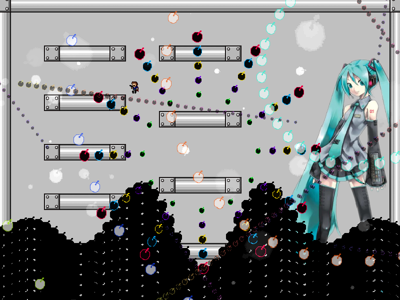
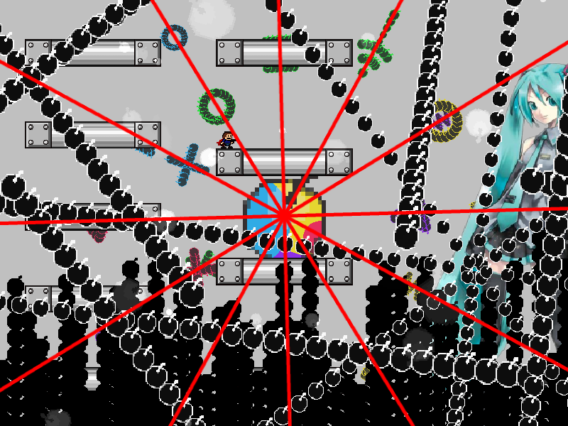
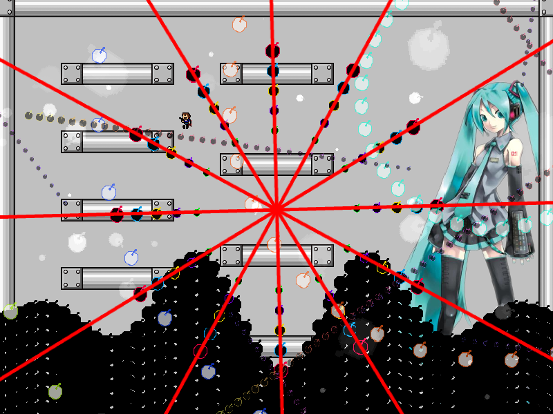

| creator | segment | label | jump |
|---|---|---|---|
| NN | 0:42.80~0:43.90 | P*A/Q | double |
4-1の解答に対応する、角度のみがランダムな弾幕です。
4-1において選択した回避経路に応じて異なる戦略を用いることを目的としています。
0:43.00において画面中央を中心として生成される放射状弾幕に関して、その角度を4-1における背景演出によって予測することができます（fig.4-2.1.a, fig.4-2.1.b）。

